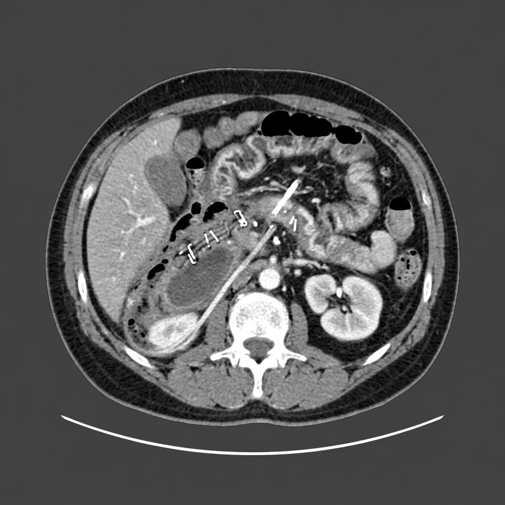
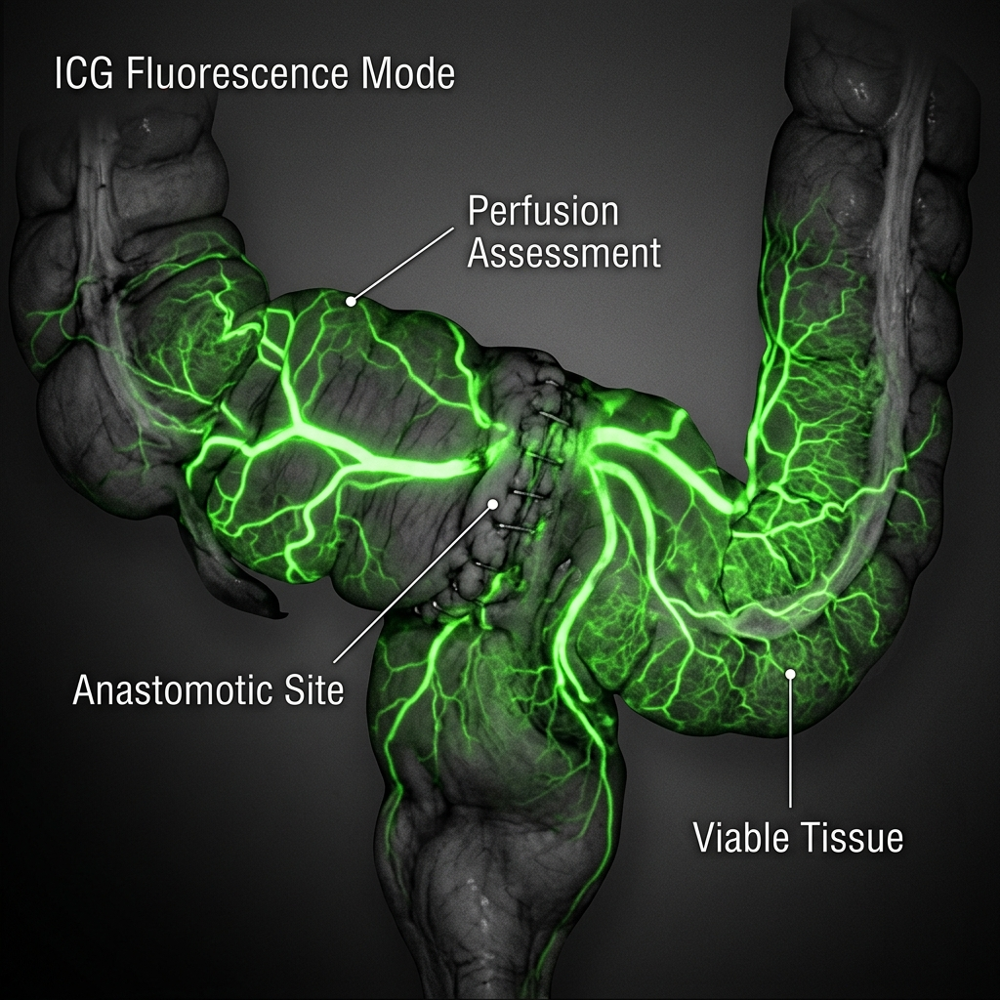
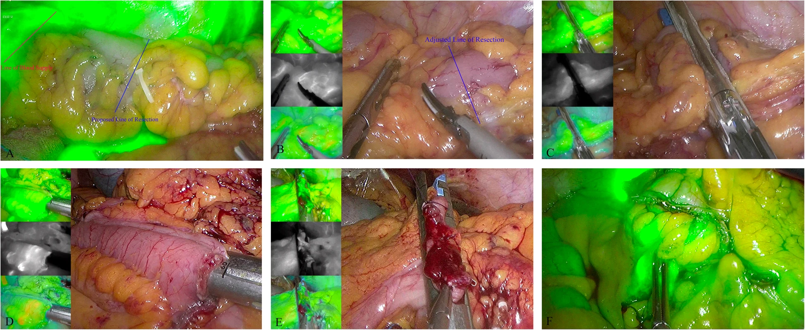
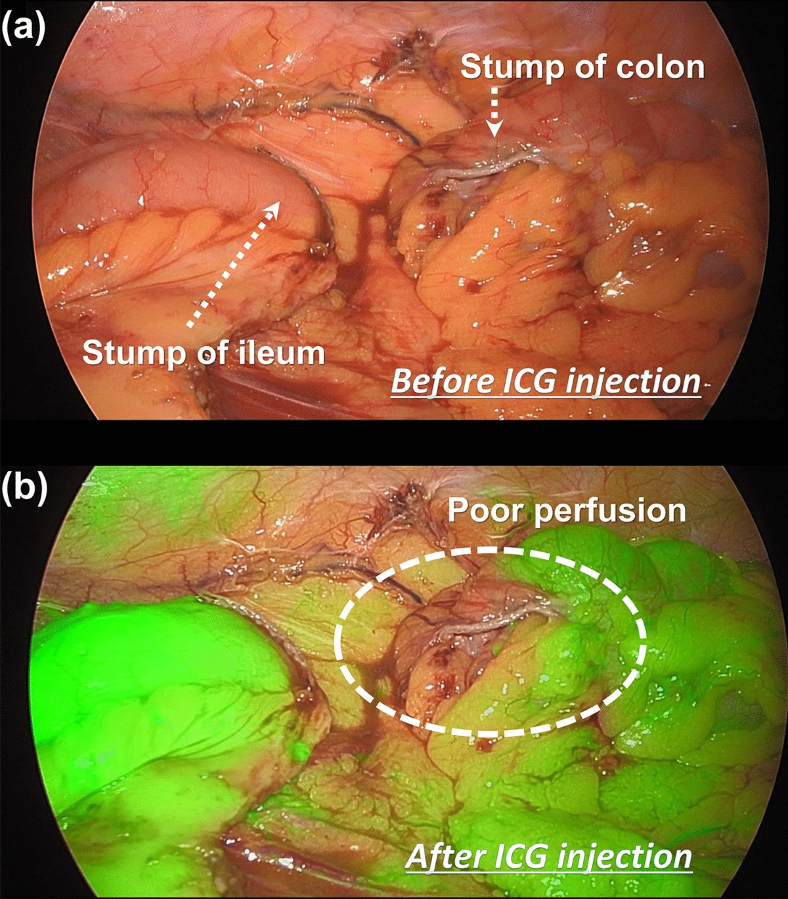

Management of Anastomotic Complications
of Colorectal Surgery
Evidence-Based Clinical Guidelines, Preventions, Perfusion Analysis, and Intervention Protocols
Epidemiology & Pathophysiology of Colorectal Anastomotic Leaks
Anastomotic leak (AL) is the single most dreaded complication in colorectal surgery. It accounts for substantial post-operative morbidity, extended hospital stays, increased healthcare costs, and carries a profound clinical burden.
Location-Based Incidence Breakdown
The risk of anastomotic leakage is inversely proportional to the distance of the anastomosis from the anal verge. The closer the connection is to the anus, the higher the physiological tension, the more complex the blood supply, and the less peritoneal coverage is present to aid sealing:
| Anastomotic Site | Baseline Incidence Rate | Physiological and Technical Factors |
|---|---|---|
| Low Rectal / Coloanal (<5 cm from anal verge) | 8.0% – 20.0% | Absent serosa, narrow pelvic cavity limiting visibility, high bacterial load, significant mechanical tension during defecation. |
| Mid-Rectal (5 – 10 cm from anal verge) | 5.0% – 8.0% | Partial serosal coverage, deep dissection within the mesorectal envelope. |
| Intraperitoneal Colon (>10 cm, e.g., Ileocolic or Colocolic) | 1.0% – 4.0% | Complete serosal lining, rich collateral perfusion (marginal artery of Drummond), laxity minimizing tension. |
Profound Impact on Long-term Outcomes
- Morbidity & Mortality: Anastomotic leakage directly increases 30-day mortality, leading to a 3x to 5x higher risk of death. In compromised or elderly patients, leak-associated mortality can reach 6.0% – 10.0%.
- Oncological Consequences: Local pelvic sepsis triggered by subclinical or clinical leaks impairs cellular immune surveillance and induces a local inflammatory cascade. Studies reveal that AL is associated with a 20.0% – 30.0% increase in local cancer recurrence and a corresponding reduction in 5-year disease-free and overall survival rates.
Preoperative Stratification & Modifiable Risk Factors
Developing a clinical intuition for anastomotic risk requires systematic preoperative assessment of both patient-related systemic factors and procedure-specific anatomical challenges.
Patient-Related Systemic Risk Factors
- Nutritional Deficits: A pre-operative serum albumin < 3.5 g/dL represents severe subclinical malnutrition, corresponding to a 2.4-fold increase in the risk of anastomotic breakdown due to impaired collagen cross-linking.
- Steroids & Immunosuppression: Active chronic corticosteroid therapy (specifically prednisone > 10 mg/day or equivalent for > 10 days) severely blunts the early inflammatory phase of wound healing, stalling fibroblasts.
- Metabolic Dysregulation: Uncontrolled diabetes mellitus with a glycosylated hemoglobin (HbA1c) > 7.0% leads to microvascular dysfunction, impaired granulocyte function, and tissue hypoxia at the staple line.
- Tissue Perfusion Modifiers: Active tobacco smoking within 4 weeks of surgery reduces peripheral microvascular tissue oxygenation via chronic vasoconstriction. Active smokers experience a 2.0-fold higher risk of AL.
- General Health Index: Patients classified as ASA Class ≥ III represent a highly fragile baseline with impaired reserve to withstand subclinical septic challenges.
Surgical & Anatomical Challenge Elements
- Neoadjuvant Radiotherapy (RT/CRT): Preoperative pelvic irradiation causes microvascular obliterative endarteritis, dense tissue fibrosis, and depletion of local mesenchymal stem cells. Neoadjuvant RT increases the rectal leak rate by up to 2.5-fold, making diversion almost universally mandatory in this group.
- Anatomical Constraints: Male sex is a significant anatomical risk factor due to a narrow, deep android pelvis, which compromises laparoscopic maneuvering, increases instrument collision, and makes division of the distal rectum technically arduous.
Biochemical Risk Markers: CRP & Procalcitonin Kinetics
Relying solely on clinical signs (tachycardia, fever) for detecting anastomotic leaks often leads to delayed diagnosis because these signs are late-stage indices. Integrating routine postoperative biochemical screening on Postoperative Days (POD) 3, 4, and 5 provides high clinical sensitivity, allowing safe, accelerated discharge.
C-Reactive Protein (CRP) Validation Thresholds
CRP is an acute-phase reactant synthesized by the liver under IL-6 stimulation. While a single high value can be non-specific, the kinetic trend and negative predictive value (NPV) are incredibly robust:
- POD 3 CRP Cutoff: 15.9 mg/dL (159 mg/L). A value below this threshold has an NPV of 97.0%, virtually excluding a major anastomotic leak.
- POD 4 CRP Cutoff: 11.4 mg/dL (114 mg/L).
- POD 5 CRP Cutoff: 10.9 mg/dL (109 mg/L).
Procalcitonin (PCT) Kinetics
PCT is a highly specific marker for systemic bacterial infection, rising within 3 to 6 hours of a bacterial challenge, far quicker than CRP:
- POD 3 PCT Cutoff: 0.75 ng/mL.
- POD 4 PCT Cutoff: 0.90 ng/mL. Values above these thresholds are strong indicators of developing deep pelvic or intra-abdominal sepsis, mandating immediate CT imaging with oral and intravenous contrast.
Classification, Morbidity, and Diagnostic Criteria
Anastomotic bleeding is a stressful postoperative complication that can range from minor self-limiting luminal shedding to catastrophic hemorrhage resulting in hypovolemic shock.
Early vs. Late Postoperative Bleeding
- Early Bleeding (POD 0 – 1): Typically represents a direct technical failure of mechanical or hand-sewn hemostasis. It is often caused by an un-stapled vessel in the staple line, staple-line slippage, or inadequate primary suture ligation.
- Late Bleeding (POD 5 – 14): Usually results from tissue ischemia, marginal ulceration, local infection, or subclinical anastomotic separation exposing a submucosal vessel. It is closely linked to localized micro-leaks.
Morbidity & Diagnostic Criteria
- Bright red blood per rectum (BRBPR) or dark blood with clots, accompanied by variable hemodynamic changes.
- Hemodynamic Instability: Defined as a sustained systolic blood pressure < 90 mmHg, heart rate > 110 bpm, or orthostatic drops.
- Laboratory Indicators: A drop in hemoglobin > 2.0 g/dL within a 12-hour window, requiring immediate type-and-crossmatch.
Hemodynamically Stable Patient Interventional Protocols
For hemodynamically stable patients, management is sequential, starting with conservative optimization and escalating to high-precision endoscopic or angiographic interventions.
1. Conservative Stabilization & Optimization
- Enforce strict bowel rest (NPO) and establish reliable intravenous access.
- Correct coagulopathy: maintain platelets > 50,000/µL and correct INR to < 1.5 using fresh frozen plasma (FFP) or prothrombin complex concentrate (PCC) if the patient is anticoagulated.
- Target a hemodynamically safe hematocrit with a transfusion trigger of hemoglobin < 7.0 – 8.0 g/dL.
2. Flexible Endoscopy (First-Line Therapy)
Endoscopy must be performed with extreme care to protect the integrity of the fresh anastomosis:
- Insufflation Protocol: Always utilize Carbon Dioxide (CO2) insufflation under minimal pressure. CO2 is absorbed 100 times faster than room air, minimizing anastomotic tension and risk of barogenic rupture.
- Therapeutic Interventions:
- Epinephrine Injection: 1:10,000 or 1:20,000 dilution. Inject in 1.0 – 2.0 mL aliquots into four quadrants around the bleeding focus.
- Endoclip Placement: Apply hemoclips directly to the bleeding vessel. Ensure the clip jaws grasp only the mucosal/submucosal layer to avoid deep staple-line tearing.
- Thermal Coagulation: Use low-power monopolar or bipolar contact probes (Gold Probe) with gentle pressure, or argon plasma coagulation (APC) at low flow rates (0.8 – 1.2 L/min) and low power (20 – 30 W) to avoid deep tissue necrosis.
3. Selective Angiographic Embolization (Second-Line)
Indicated for active bleeding where endoscopy is technically unsuccessful or contraindicated (e.g., severe proximal colonic edema):
- Protocol: Perform super-selective catheterization of the branch supplying the anastomosis (e.g., ileocolic, superior rectal, or inferior mesenteric arteries). Embolize using microcoils or gelfoam slurry.
- Critical Ischemic Risk: Super-selective embolization carries a 10.0% – 15.0% risk of localized ischemia, which can result in subsequent anastomotic leakage. Consequently, embolization must be extremely targeted.
Hemodynamically Unstable Patient Surgical Protocols
Hemodynamic instability despite active resuscitation constitutes a surgical emergency. The operative strategy is dictated by the location and accessibility of the anastomosis.
1. Transanal Suture Ligation (Low Rectal / Coloanal Anastomosis)
When the bleeding anastomosis is located within the distal 5–6 cm of the rectum, it can be accessed transanally:
- Place the patient in the lithotomy position and insert a Lone Star retractor for optimal circumferential exposure.
- Gently irrigate clots to identify the precise staple-line bleeding site under direct vision.
- Place a figure-of-eight suture using 3-0 or 4-0 absorbable monofilament (such as Monocryl or Vicryl) on a 1/2 circle needle, taking shallow, partial-thickness bites to secure hemostasis without compromising luminal diameter.
2. Abdominal Re-exploration (Intraperitoneal Anastomosis)
For bleeding from intraperitoneal anastomoses (e.g., ileocolic, colocolic) that cannot be controlled endoscopically:
- Perform urgent laparoscopy or open laparotomy.
- If the anastomosis is structurally sound and the bleeding is localized, perform primary suture reinforcement.
- Dismantling & Stoma Creation: If the anastomosis is heavily congested, ischemic, or partially disrupted, dismantle the anastomosis completely. Construct a proximal end-stoma (e.g., Hartmann's procedure or end ileostomy) and mature the distal stump. Re-anastomosis in a highly unstable patient with active pelvic bleeding is contraindicated.
Extraperitoneal vs. Intraperitoneal Leaks: Physiology & Presentation
Understanding the physiological and clinical differences between leaks in the peritoneal cavity versus the extraperitoneal space is critical for making timely therapeutic decisions.
Intraperitoneal Leaks (Colon / Upper Rectum)
- Physiological Features: Intraperitoneal leaks allow immediate, unhindered dissemination of bowel contents into the free peritoneal cavity.
- Clinical Presentation: Typically present **early (POD 4 – 7)** with rapid clinical deterioration. Patients display signs of generalized peritonitis (rebound, rigidity), high fever, severe tachycardia, and systemic inflammatory response syndrome (SIRS) escalating to septic shock.
- Management Directive: These represent surgical emergencies requiring immediate operative source control.
Extraperitoneal Leaks (Low Rectum / Pelvis)
- Physiological Features: The pelvic extraperitoneal space is bounded by dense fascial planes (Waldeyer's fascia posteriorly, Denonvilliers' fascia anteriorly). This anatomical confinement often localizes the leakage, forming a pelvic abscess.
- Clinical Presentation: Typically present **later (POD 7 – 14)** with localized pelvic sepsis. Signs include low-grade fever, deep pelvic pressure, purulent or feculent rectal or vaginal discharge, tenesmus, or localized urinary symptoms.
- Management Directive: Frequently amenable to conservative optimization, endoluminal vacuum therapy (EVT), or image-guided percutaneous drainage.
The "Stable Patient" Anastomotic Leak Pitfall
Patient Profile: 55-year-old male with transverse colon adenocarcinoma and gastric antrum invasion, who underwent extended right hemicolectomy and distal gastrectomy.
Presentation (POD 7): Atypical "silent" clinical course. The patient displayed only minimal abdominal tenderness and distension without leukocytosis, fever, or tachycardia. Vital signs and laboratory markers were completely within normal limits.
Radiological Findings (CT Abdomen/Pelvis):
- Surgical Reconstruction: Clear postoperative evidence of distal gastrectomy with Roux-en-Y reconstruction, extended right hemicolectomy (ileum to proximal descending colon anastomosis), and two corrugated surgical drains.
- Free Intraperitoneal Air: The volume of free intra-peritoneal air was significantly more than expected for the 7th postoperative day.
- Extraluminal Air: Multiple extra-luminal air bubbles were visible adjacent to the ileocolic anastomosis.
- Contrast Transit Limit: Direct leakage signs could not be evaluated using oral contrast because the contrast did not transit far enough to reach the ileocolic anastomosis. Leakage was suspected based on indirect findings.

Intraoperative Prevention: Indocyanine Green (ICG) Angiography
A primary cause of anastomotic failure is subclinical tissue ischemia at the cut margins. Visual inspection of bleeding edges is highly subjective and inaccurate. Indocyanine Green (ICG) fluorescence angiography provides an objective, real-time assessment of microvascular perfusion.
ICG Chemistry and Near-Infrared (NIR) Physics
- ICG is a water-soluble tricarbocyanine dye that rapidly binds to plasma proteins (primarily albumin) upon intravenous injection. It remains strictly within the intravascular compartment.
- Under near-infrared light illumination at a wavelength of **806 nm**, the protein-bound ICG is excited and emits fluorescence at **830 nm**, which is captured by specialized laparoscopic or robotic camera systems.
Step-by-Step Perfusion Assessment Protocol
- First Perfusion Assessment (Prior to Transection):
- Administer an intravenous bolus of 7.5 to 12.5 mg of ICG (typically 3 to 5 mL of 25 mg ICG reconstituted in 10 mL sterile water), followed immediately by a 10 mL saline flush.
- Activate near-infrared mode on the console. Homogeneous green fluorescence should appear within **15 to 30 seconds** (matching arterial phase kinetics).
- Mark the line of transection on the bowel wall precisely at the boundary of strong, vibrant fluorescence. Resect any segment displaying dim, patchy, or delayed (>20 seconds) dye uptake.
- Anastomosis Construction: Complete the mechanical or hand-sewn anastomosis.
- Second Perfusion Assessment (Post-Anastomosis):
- Wait 5 to 10 minutes after the initial dose to allow baseline clearance (ICG is cleared rapidly by the liver, with a plasma half-life of 150–180 seconds).
- Administer a second, identical IV bolus of 7.5 to 12.5 mg ICG.
- Assess the completed staple line. Ensure bright, equal fluorescence on both the proximal (colonic) and distal (rectal) sides of the anastomosis.
- Cutback Rule: If a perfusion deficit is noted on either side of the staple line (indicated by lack of fluorescence or a clear perfusion mismatch), the anastomosis must be dismantled and re-created using well-perfused tissue.


- a The perfusion of the bowel was assessed
- b Further “re-resection” up to a “fluorescent” portion
- c The colon is transected within an area of well-perfused tissue
- d The two broken ends of the intestines are joined
- e The enterocolotomy is closed; and
- f The perfusion of anastomosis was assessed

ISREC Clinical Classifications & Critical Controversies
Standardizing the definition of anastomotic leaks is essential for clinical audit and decision-making. The International Study Group of Rectal Cancer (ISREC) defines three severity grades:
ISREC Grading System
| ISREC Grade | Clinical Criteria | Therapeutic Management Directive |
|---|---|---|
| Grade A | Subclinical leak. No systemic symptoms; discovered incidentally on routine post-operative contrast imaging. | No active intervention. Enforce clinical surveillance; allow normal diet progression. |
| Grade B | Clinical leak causing localized pelvic sepsis. Patient is stable without generalized peritonitis or organ failure. | Active non-operative intervention. Intravenous broad-spectrum antibiotics, bowel rest, nutritional support, or image-guided percutaneous drainage. |
| Grade C | Major leak causing generalized peritonitis, severe systemic sepsis, or multi-organ failure. | Emergency operative intervention. Urgent laparoscopy or laparotomy for abdominal washout, source control, and stoma creation. |
Contemporary Management Controversies
- Protective Diversion Stomas:
A loop ileostomy or loop colostomy does not prevent an anastomotic leak from occurring. However, it significantly diverts the fecal stream, mitigating clinical severity. A stoma reduces septic complications from **14.0% to 3.0%** and decreases the emergency reoperation rate by **70.0%**. It is universally recommended for ultralow rectal or high-risk coloanal anastomoses.
- Routine Pelvic Drains:
Large multicenter randomized trials (including the GRECCAR-5 study) confirm that routine pelvic drains **do not prevent or reduce the incidence of anastomotic leaks** in rectal surgery. Drains are helpful for evacuating postoperative hematomas or seromas that could become infected, but they should be removed early (POD 3–5) to prevent retrograde bacterial contamination.
- Steroids, NSAIDs, and Ketorolac:
Postoperative administration of non-selective NSAIDs (such as ketorolac or ibuprofen) and high-dose selective COX-2 inhibitors for >48 hours is associated with a **2.0-fold increase** in anastomotic leakage. NSAIDs inhibit cyclooxygenase, which impairs early inflammatory cell recruitment, angiogenesis, and mucosal epithelial migration required to seal the staple line. Corticosteroids similarly impair collagen synthesis and fibroblast activity.
Clinical Management Algorithm for Anastomotic Leaks
Managing an established anastomotic leak is guided by the patient's hemodynamic status, the presence of peritonitis, and the size of any localized collections.
1. Contained Leak < 3.0 cm (Hemodynamically Stable, No Peritonitis)
- Manage conservatively. Maintain bowel rest (NPO) and initiate total parenteral nutrition (TPN) or low-residue enteral nutrition.
- Administer broad-spectrum intravenous antibiotics targeting Gram-negative bacilli and anaerobes:
- Piperacillin-Tazobactam: 4.5 g IV every 6 hours, OR
- Ertapenem: 1.0 g IV every 24 hours.
2. Contained Leak > 3.0 cm or Abscess (Hemodynamically Stable, No Peritonitis)
- First-Line Therapy: Perform **Image-Guided Percutaneous Drainage** via transrectal, transgluteal, or transabdominal access under CT or ultrasound guidance.
- Retain the drainage catheter until output decreases to < 10 – 20 mL/day and repeat imaging confirms complete collapse of the cavity.
3. Unstable Sepsis or Generalized Peritonitis (ISREC Grade C)
This is a surgical emergency requiring immediate abdominal exploration (laparoscopy or laparotomy):
- Assessment of the Anastomotic Defect:
- Major Defect: Defined as a defect **> 1.0 cm or involving > 1/3 of the anastomotic circumference**.
Management: Dismantle the anastomosis completely. Resect the compromised margins, create an end-colostomy (Hartmann's procedure), and thoroughly wash out the peritoneal cavity. Attempting primary repair of a large defect in an actively septic field is highly associated with recurrent breakdown.
- Minor Defect (< 1/3 circumference):
Management: In stable patients, perform primary suture repair of the defect, execute a thorough multi-quadrant peritoneal washout, place a surgical drain in the pelvis, and create a proximal defunctioning loop stoma (ileostomy) to protect the repair.
- Major Defect: Defined as a defect **> 1.0 cm or involving > 1/3 of the anastomotic circumference**.
Endoluminal Vacuum Therapy (EVT): Protocol & Sequences
Endoluminal Vacuum Therapy (EVT), commonly known as EndoVAC, has revolutionized the management of extraperitoneal pelvic leaks and presacral abscess cavities following low anterior resections, achieving success rates of **80.0% – 90.0%**.
Physiological Mechanism
Continuous localized negative pressure (**-125 mmHg**) applied directly to the pelvic cavity evacuates secretions, reduces regional bacterial colonization, decreases localized interstitial edema, improves microvascular perfusion, and stimulates rapid granulation tissue formation, leading to closure of the defect.
Step-by-Step EVT Placement Protocol
- Initial Endoscopic Evaluation: Perform a flexible sigmoidoscopy to inspect the rectal lumen, locate the anastomotic defect, and enter the presacral abscess cavity. Irrigate the cavity thoroughly.
- Sponge Customization: Cut a specialized open-pored polyurethane sponge (EndoSPONGE) to fit the dimensions of the cavity, ensuring it is slightly smaller than the cavity to allow collapse.
- Sponge Insertion:
- Intracavitary Method (Preferred): Insert the sponge completely through the anastomotic defect into the presacral space.
- Intraluminal Method: For very shallow defects, place the sponge within the rectal lumen directly over the defect.
- Suction Initiation: Connect the distal end of the sponge's suction tube to a continuous negative pressure system set to **-125 mmHg**. Confirm collapse of the sponge and rectal wall seal.
- Maintenance and Exchange Sequence:
- The sponge must be **exchanged every 3 to 4 days** under endoscopic guidance. Leaving it longer allows granulation tissue to grow into the sponge pores, making removal painful and risking hemorrhage.
- At each exchange, inspect the cavity. It should demonstrate progressive shrinkage, clean borders, and healthy granulation tissue.
- Repeat the cycle (typically **4 to 7 exchanges** over 2 to 3 weeks) until the presacral cavity is completely obliterated and covered with healthy neo-mucosa.
Benign vs. Malignant Strictures: Dilation Protocols
Anastomotic stricture is a late complication of colorectal surgery, occurring in **3.0% – 22.0%** of low stapled rectal anastomoses. It presents with progressive constipation, narrow-caliber stools, abdominal bloating, and tenesmus.
Etiology
- Benign Strictures: Caused by chronic tissue ischemia, a subclinical post-operative leak causing extensive scarring, or previous pelvic radiotherapy.
- Malignant Strictures: Caused by local recurrence of the primary colorectal carcinoma. **A diagnostic tissue biopsy is mandatory** before initiating any mechanical dilation to rule out recurrence.
Progressive Dilation Protocols
Mechanical dilation is indicated for symptomatic patients when the luminal diameter is restricted to < 10 – 12 mm:
- Endoscopic Balloon Dilation (First-Line):
Using a Controlled Radial Expansion (CRE) balloon dilator passed through the scope, perform progressive dilation under direct visualization. Stepwise inflate the balloon to target diameters (e.g., 10–12 mm, then 12–15 mm, and up to 15–18 mm) for **1 to 2 minutes** per inflation.
Do not force dilation beyond 18 mm in a single session due to the risk of transmural tearing and rectal perforation. Repeat sessions (typically **2 to 4 sessions spaced 2 to 3 weeks apart**) are often required to achieve stable luminal patency.
- Digital / Hegar Dilation (For Palpable Low Rectal Strictures):
For low, palpable rectal or coloanal strictures, gentle progressive transanal dilation can be performed using well-lubricated digital index fingers or Hegar dilators in an outpatient setting.
Postoperative Fistula Paradigms & Repair Timelines
Anastomotic failure can lead to the formation of abnormal epithelialized tracts between the colon/rectum and adjacent pelvic organs: rectovaginal, rectovesical (urinary bladder), rectourethral, or rectocutaneous fistulas.
Critical Principle: The Conservative Management Phase
Any attempt to perform primary surgical repair on a fresh, inflamed pelvic fistula will fail due to tissue friability. **Early surgical intervention is strongly contraindicated.** Management must follow a strict timeline:
- Initial Stage (0 – 3 Months): Enforce active drainage, treat pelvic sepsis, and maximize nutritional intake. A proximal defunctioning stoma (loop ileostomy) is almost always necessary to divert the fecal stream, reduce local tissue inflammation, and allow the acute pelvic reaction to subside.
- The Timeline Rule: Allow a minimum of **3 to 6 months** of complete diversion and pelvic rest before attempting definitive tissue repair. The surrounding tissues must be soft, mobile, and completely free of active acute inflammation.
Definitive Surgical Repair Strategies
- Endorectal Advancement Flap (ERAF):
For low-to-mid rectovaginal or rectocutaneous fistulas. A U-shaped mucosal-submucosal or full-thickness rectal wall flap is mobilized from a region proximal to the fistula opening, pulled downward over the defect, and sutured into place using absorbable sutures, sealing the rectal side of the tract.
- LIFT Procedure (Ligation of Intersphincteric Fistula Tract):
Specifically for fistulas that course through the anal sphincter complex, allowing ligation and division of the tract within the intersphincteric plane without dividing the sphincter muscle.
- Gracilis Muscle Transposition (For Complex or Recurrent Fistulas):
Indicated for large, recurrent, or heavily irradiated rectovaginal or rectocutaneous fistulas where local tissue vascularity is poor.
The gracilis muscle is harvested from the medial thigh, preserving its proximal vascular pedicle (from the medial circumflex femoral artery). The muscle is transposed transperineally into the rectovaginal or rectovesical septum, creating a highly vascularized, healthy tissue barrier between the two organs to promote permanent healing.
ABSITE Board Quick-Review Reference
| Topic | Key High-Yield Fact / Threshold |
|---|---|
| Coloanal Leak Rate | 8.0% – 20.0% (Highest rate in colorectal surgery due to lack of serosa). |
| Intraperitoneal Leak Rate | 1.0% – 4.0% (Lowest rate; benefit of serosal sealing and collateral flow). |
| POD 3 CRP Cutoff | 15.9 mg/dL (Values below this have a 97.0% negative predictive value). |
| POD 3 PCT Cutoff | 0.75 ng/mL (Highly sensitive marker for systemic bacterial sepsis). |
| ICG Angiography Dose | 7.5 – 12.5 mg IV bolus (Repeated 5–10 min post-anastomosis). |
| ICG Wavelengths | Excitation at 806 nm; Emission at 830 nm (Near-Infrared Light). |
| Abscess Management | < 3.0 cm: Antibiotics and bowel rest | > 3.0 cm: Image-guided percutaneous drainage. |
| Major Anastomotic Defect | > 1.0 cm OR > 1/3 of the circumference (Mandates dismantling and end-stoma). |
| EVT Pressure Threshold | Continuous negative pressure at -125 mmHg. |
| EVT Sponge Exchange | Every 3 to 4 days (Prevents tissue ingrowth and bleeding). |
| Stricture Assessment | Biopsy first to rule out malignant recurrence before any mechanical dilation. |
| Fistula Repair Timeline | Delay definitive repair for **3 to 6 months** after proximal fecal diversion. |
| NSAID / Ketorolac Risk | 2.0-fold increase in leak rate if given >48h post-op; impairs early wound healing. |
| PILLAR II Outcome | Routine ICG perfusion scans reduced rectal leak rates from 9.7% to 4.7%. |